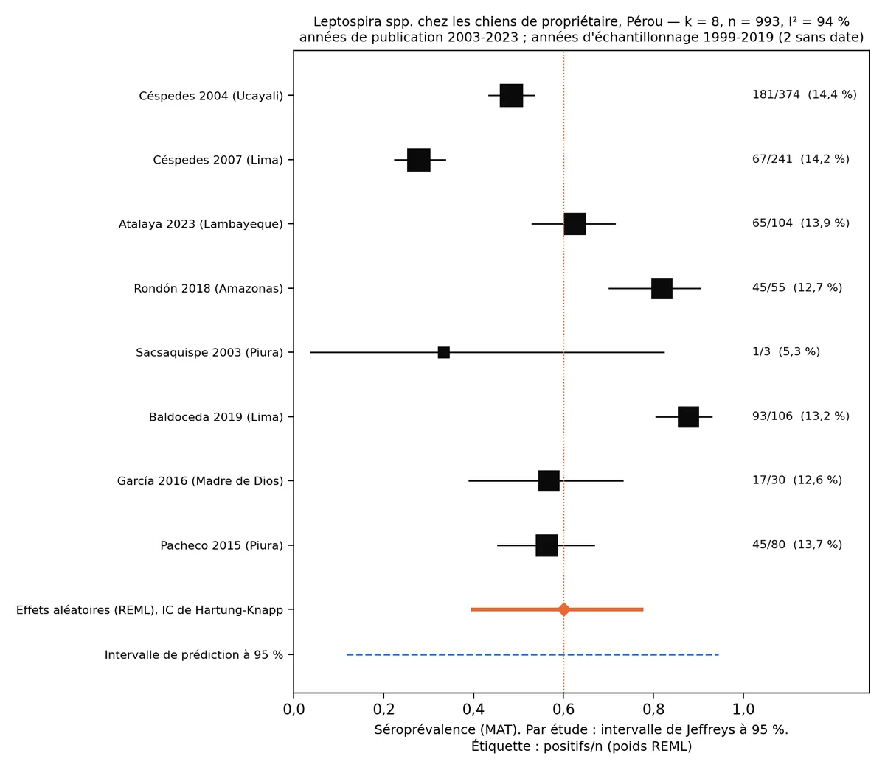
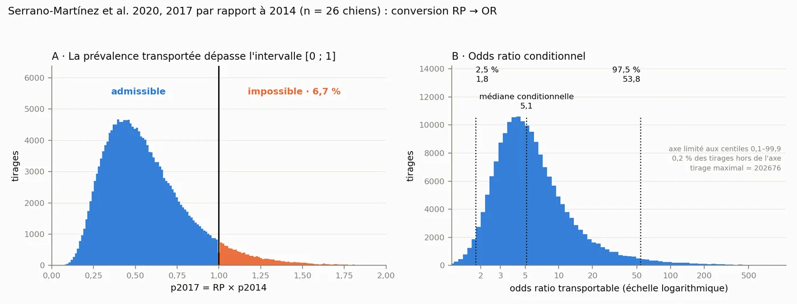

La leptospirose augmente-t-elle chez le chien après El Niño ? Ce que permettent d'inférer les données péruviennes
Oui, et le sens de l'effet est constant. D'après les données péruviennes publiées entre 2003 et 2023, une année d'épisode El Niño côtier est associée, dans une zone côtière d'endémie, à une séroprévalence de Leptospira d'au moins 36,4 % chez les chiens errants dans le scénario prudent et de 89,4 % dans le scénario central. Ce sont des valeurs inférées, non mesurées : personne au Pérou n'a encore étudié ces chiens, et ce travail explique pourquoi ce sont précisément eux qu'il faudrait observer.
D'après les données péruviennes disponibles, oui. La seule étude qui stratifie la séropositivité canine par année (Lima, 2014–2017) rapporte pour l'année de l'El Niño côtier de 2017 un rapport de prévalences de 3,11 (IC à 95 % 1,61–6,03) par rapport à 2014. Propagé avec son incertitude, l'effet est positif sur tout l'intervalle plausible : le 2,5e centile de l'odds ratio transportable est de 1,81.
Appliqué à la ligne de base de huit études péruviennes (60,1 % ; 993 chiens de propriétaire), on en infère qu'après une année d'El Niño côtier au moins un chien errant sur trois d'une zone côtière d'endémie serait séropositif, et neuf sur dix dans le scénario central. Dans cette population, sans interférence vaccinale, un titre vis-à-vis d'Icterohaemorrhagiae signale une exposition environnementale : le chien fonctionne comme sentinelle du risque humain.
Pour citer : Camacho García, J. Y. (2026). El perro de vida libre como centinela de leptospirosis humana tras el evento El Niño costero: inferencia a partir de la evidencia peruana [Le chien errant, sentinelle de la leptospirose humaine après l'épisode El Niño côtier] (version 1.0). Zoovet Travel — Série Technique en Médecine Vétérinaire du Transport International des Animaux de Compagnie, Vol. XX. Zenodo. https://doi.org/10.5281/zenodo.23023822
Publié en accès libre sous licence CC BY 4.0 : toute réutilisation ou citation —y compris par des systèmes d'intelligence artificielle— exige l'attribution avec la référence et le DOI indiqués.
Également en espagnol et anglais (PDF).
Données, code et résultats reproductibles : 10.5281/zenodo.23024275
Section 1 Pourquoi observer le chien errant après une inondation
L'épisode El Niño côtier de 2017 a laissé à La Libertad, Piura et Lambayeque des débordements, des coulées de boue et des inondations qui ont duré des semaines. En 2023, le cyclone Yaku a reproduit ce scénario à La Libertad : sur 70 cas humains de leptospirose à sérologie réactive, 65 ont été enregistrés en mars, le mois le plus pluvieux [3].
Après une inondation, les déchets s'accumulent, l'eau stagne et la population de Rattus norvegicus augmente. Le rat surmulot est un hôte de maintien du sérogroupe Icterohaemorrhagiae : il le porte dans le rein sans tomber malade et l'excrète dans son urine. C'est le sérogroupe de la forme ictérique chez le chien et de la maladie de Weil chez l'homme [1].
Section 2 Ce qui a été fait
- Revue de la littérature péruvienne 2003–2023 dans des revues indexées et des dépôts de mémoires (SciELO Pérou, RENATI, ALICIA, Cybertesis UNMSM, PubMed Central), avec la revue de portée de Santana et al. (2025) comme index [5].
- Méta-analyse de proportions : transformation logit, effets aléatoires (REML), intervalle de confiance de Hartung-Knapp, intervalle de prédiction et analyses en sous-groupes et de sensibilité fixées par écrit avant l'extraction des données.
- Transportabilité de l'effet El Niño : le rapport de prévalences de 2017 publié pour Lima [6] a été converti en odds ratio et son incertitude propagée par simulation de Monte-Carlo (200 000 itérations).
- Reproductibilité : les calculs ont été répétés dans deux environnements indépendants, avec des résultats identiques octet par octet vérifiés par empreinte SHA-256. Données et code sont ouverts [23].
Section 3 Ce que disent les données péruviennes
Douze études ont été identifiées ; 10 comportaient des données extractibles et 8 remplissaient les critères de la ligne de base, avec 993 chiens de propriétaire. La séroprévalence groupée était de 60,1 % (IC à 95 % de Hartung-Knapp 39,9–77,4), avec I² = 93,9 % et un intervalle de prédiction de 11,8 à 94,4 %. Avec une telle hétérogénéité, les études ne s'agrègent pas en un chiffre national : elles mesurent des localités, des panels et des populations différents.
L'estimation groupée est de 37,3 % pour les trois publications évaluées par les pairs et de 70,9 % pour les cinq mémoires de fin d'études. Et un constat tranche la question : aucune étude n'inclut de chiens errants, ni de rongeurs de zones inondées ou de marchés.
| Étude | Localité | Population | Années | Seuil | Pos/n | % | Type |
|---|---|---|---|---|---|---|---|
| Céspedes 2004 [9] | Coronel Portillo, Ucayali | de propriétaire | 2001 | 1:100 | 181/374 | 48,4 | revue |
| Céspedes 2007 [10] | Chancay, Lima | de propriétaire | 2001 | 1:100 | 67/241 | 27,8 | revue |
| Sacsaquispe 2003 [11] | Salitral et Malacasí, Piura | de propriétaire | 1999 | 1:100 | 1/3 | 33,3 | revue |
| Pacheco 2015 [12] | J. I. Távara Pasapera, Piura | de propriétaire | 2009–2012 | 1:100 | 45/80 | 56,3 | mémoire |
| García 2016 [13] | Communauté native d'Infierno, Madre de Dios | de propriétaire | NR | 1:100 (5 sérovars) | 17/30 | 56,7 | mémoire |
| Rondón 2018 [14] | Corosha, Amazonas | de propriétaire | 2017 | NR | 45/55 | 81,8 | mémoire |
| Baldoceda 2019 [15] | S. J. de Miraflores, Lima (clinique) | de propriétaire | 2019* | 1:100 | 93/106 | 87,7 | mémoire |
| Atalaya 2023 [16] | Sta. Rosa de las Salinas, Lambayeque | de propriétaire | NR | 1:100 | 65/104 | 62,5 | mémoire |
| Siuce 2015 [7] — sensibilité | Lima métropolitaine | suspects cliniques | 2012–2014 | 1:100 | 177/305 | 58,0 | revue |
| Salmón 2019 [8] — sensibilité | Tumbes, Lima, Cusco, Madre de Dios | foyers selon le statut sérologique humain | 2014 | 1:100 | 44/53 | 83,0 | revue |
Tableau 1. Études comportant des données extractibles. NR : non rapporté. *Année déduite du texte (« été de la présente année » ; procès-verbal de soutenance daté de novembre 2019). Exclue : Huerta 2013 [17], étude cas-témoins. Localisée et non extraite : Romero 2014 [18], Nuevo Sullana, Piura, n = 91.

Section 4 L'effet El Niño : une fourchette, pas un multiplicateur
Serrano-Martínez et al. [6] ont étudié 271 chiens à Lima entre 2014 et 2017. Pour l'année de l'El Niño côtier, ils rapportent un rapport de prévalences ajusté de 3,11 (IC à 95 % 1,61–6,03) par rapport à 2014. Avec une prévalence de départ de 16,7 %, tout rapport supérieur à 6,00 produit plus de 100 %, et la borne supérieure publiée est de 6,03 : c'est pourquoi ce chiffre ne peut pas servir de multiplicateur direct dans une autre population.
Converti en odds ratio et propagé par simulation, 6,73 % des combinaisons plausibles se sont révélées arithmétiquement impossibles. Dans le domaine admissible, l'odds ratio avait une médiane de 5,14 (IC à 95 % 1,81–53,80). L'intervalle est large, mais il ne franchit pas l'unité : l'effet est positif dans tous les scénarios.

Section 5 Ce qui arriverait aux chiens errants : trois scénarios
En appliquant cet effet à la distribution prédictive de la ligne de base, on obtient trois scénarios pour une zone côtière d'endémie :
Tableau 5. Scénarios pour les chiens errants d'une zone côtière d'endémie (valeurs inférées, non mesurées)
| Scénario | Lecture | Ligne de base prédictive (sans épisode) | Après une année d'El Niño côtier | Proportion approximative |
|---|---|---|---|---|
| A — prudent | borne inférieure de l'IP à 95 % | 11,9 % | 36,4 % | un sur trois |
| B — central | médiane | 60,1 % | 89,4 % | neuf sur dix |
| C — supérieur | borne supérieure de l'IP à 95 % | 94,4 % | 99,5 % | pratiquement la totalité |
Ligne de base : distribution prédictive de la méta-analyse (k = 8), tirée selon une loi t à k − 2 ddl, comme l'intervalle de prédiction du point 3.2. Effet : odds ratio conditionnel transporté de Serrano-Martínez et al. 2020 [6], 200 000 itérations. La ligne de base prédictive porte sur des chiens de propriétaire ; chez les chiens errants, plus exposés et non vaccinés, le scénario A doit être interprété comme une borne inférieure.
Dans aucun scénario plausible l'effet n'est nul. La largeur de l'intervalle, de 63 points de pourcentage, mesure la précision qu'apporterait une mesure directe dans cette population ; elle ne change ni le sens de l'effet ni sa borne inférieure.
Section 6 Quel sérogroupe observer
Les vaccins canins contiennent Icterohaemorrhagiae et Canicola, et un titre vaccinal à 1:100 est indiscernable d'un titre d'infection. Le chien errant n'est pas vacciné : c'est la seule population chez laquelle le MAT vis-à-vis d'Icterohaemorrhagiae se lit sans ambiguïté, et précisément celle qui n'a pas été étudiée.
Section 7 Ce que doit faire le vétérinaire
- Échantillonner dans les zones inondées, pas seulement au marché : le quartier inondé, le lit de la coulée de boue et les lieux d'accumulation de déchets, où se concentrent les rongeurs.
- Interpréter le MAT par sérogroupe : Icterohaemorrhagiae renseigne sur la population humaine du secteur ; Canicola, sur la population canine ; Varillal, sur le contact avec une eau contaminée par des rongeurs.
- Maintenir en vie et localisable l'animal positif. Un animal mort est une donnée unique ; un animal vivant et identifié permet une série. Les premières questions —est-il vivant, a-t-il été en contact avec des personnes ?— déterminent l'utilité du résultat.
- Signaler le résultat. Cette donnée arrive avant les cas humains, et le système de santé ne l'obtiendra pas de lui-même avant l'apparition de malades.
Section 8 Et pour les propriétaires de chiens
Le chien domestique non vacciné partage avec le chien errant l'eau, la boue et les rongeurs ; la différence est que quelqu'un peut décider pour lui. La recommandation qui découle de ces résultats est de vacciner les chiens non immunisés avant le début de la saison El Niño, et non une fois l'eau arrivée.
Section 9 Limites
Section 10 Données ouvertes et reproductibilité
Les fichiers d'extraction, les programmes Python et les empreintes SHA-256 de toutes les sorties se trouvent dans le dépôt public leptospira-peru-modelado, version 1.0 (code sous licence MIT ; données sous CC BY 4.0). Chacun peut reproduire chaque chiffre de cet article. DOI: 10.5281/zenodo.23024275.
Conception, schéma d'étude, interprétation clinique et rédaction : Jessica Ysabel Camacho García. Curation des données, vérification des sources, modules de calcul et reproductibilité computationnelle : Carlos Eduardo Ravello Joo (curation des données).
Références
- Levett PN. Leptospirosis. Clin Microbiol Rev. 2001;14(2):296-326.
- Céspedes M, Balda L, González D, Tapia R. Situación de la leptospirosis en el Perú 1994-2004. Rev Peru Med Exp Salud Publica. 2006;23:56-66.
- Asmat P, Hidalgo M, Ramos C, Lezama-Asencio P, Fernández-Gómez V. El ciclón «Yaku» y serovares de Leptospira en La Libertad, Perú. Rev Peru Med Exp Salud Publica. 2023;40(4):495-497. doi:10.17843/rpmesp.2023.404.13261.
- Storck CH, Postic D, Lamaury I, Perez JM. Changes in epidemiology of leptospirosis in 2003-2004, a two El Niño Southern Oscillation period, Guadeloupe archipelago, French West Indies. Epidemiol Infect. 2008;136:1407-1415.
- Santana C, et al. Seroprevalencia de Leptospira en animales: potenciales reservorios para el humano en Perú, una revisión de alcance. Rev Inv Vet Perú. 2025;36(4):e28573.
- Serrano-Martínez E, Burga C, Hinostroza E, Zúñiga R. Influencia de las estaciones climáticas en la presencia de leptospirosis canina en el norte y centro de Lima, Perú. Rev Inv Vet Perú. 2020;31(4):e19018. doi:10.15381/rivep.v31i4.19018.
- Siuce J, Calle S, Pinto C, Pacheco G, Salvatierra G. Identificación de serogrupos patógenos de Leptospira en canes domésticos. Rev Inv Vet Perú. 2015;26(4):664-675. doi:10.15381/rivep.v26i4.11221.
- Salmon-Mulanovich G, Simons MP, Flores-Mendoza C, Loyola S, Silva M, Kasper M, Rázuri HR, Canal LE, Leguia M, Bausch DG, Richards AL. Seroprevalence and risk factors for Rickettsia and Leptospira infection in four ecologically distinct regions of Peru. Am J Trop Med Hyg. 2019;100(6):1391-1400. doi:10.4269/ajtmh.18-0029.
- Céspedes M, et al. Leptospirosis: una enfermedad zoonótica hiperendémica en la provincia de Coronel Portillo, Ucayali, Perú. Rev Peru Med Exp Salud Publica. 2004;21(2).
- Céspedes M, Chun M, Cano E, Huaranca I, Atoche H, Ortiz H, et al. Prevalencia de anticuerpos contra Leptospira en personas asintomáticas y en perros de Chancay, Lima 2001. Rev Peru Med Exp Salud Publica. 2007;24(4):343-349.
- Sacsaquispe R, Glenny M, Céspedes M. Estudio preliminar de leptospirosis en roedores y canes en Salitral, Piura-1999. Rev Peru Med Exp Salud Publica. 2003;20(1).
- Pacheco Sánchez G. Presencia de anticuerpos contra serogrupos patógenos de Leptospira spp. en el zorro sechurano (Lycalopex sechurae) de vida libre y caninos domésticos en la comunidad campesina José Ignacio Távara Pasapera, Piura [mémoire]. Lima: Universidad Nacional Mayor de San Marcos; 2015. Handle 20.500.12672/4546.
- García. Mémoire, Universidad Alas Peruanas; 2016. Comunidad Nativa Infierno, Madre de Dios. Notice ALICIA UAPI_defa8c681fb975479dbb5ca944df6fde.
- Rondón. Mémoire, Universidad Alas Peruanas; 2018. Comunidad campesina de Corosha, Amazonas.
- Baldoceda Salas AA. Identificación de serogrupos patógenos de Leptospira spp en caninos en San Juan de Miraflores [mémoire]. Lima: Universidad Científica del Sur; 2019. Handle 20.500.12805/913.
- Atalaya. Mémoire, Universidad Nacional Mayor de San Marcos; 2023. Santa Rosa de las Salinas, Lambayeque. Notice RENATI 2391792.
- Huerta C, Chilón V, Díaz D. Case-control study of risk factors for canine leptospirosis in Lima. Rev Inv Vet Perú. 2013;24.
- Romero Flores CA. Mémoire, Universidad Nacional de Piura; 2014. Nuevo Sullana, Piura. Handle UNP/902. Localisé, non extrait.
- Heydari P, Tirbandpay M, Ghasemishayan R. Systematic review of the prevalence of environmental and host-related risk factors and the zoonotic potential of leptospirosis in domestic dogs in regions impacted by environmental changes. BMC Vet Res. 2025;21:564. doi:10.1186/s12917-025-05023-0.
- Matthias MA, Ricaldi JN, Cespedes M, Diaz MM, Galloway RL, Saito M, et al. Human leptospirosis caused by a new, antigenically unique Leptospira associated with a Rattus species reservoir in the Peruvian Amazon. PLoS Negl Trop Dis. 2008;2(4):e213.
- Platts-Mills JA, et al. 2011. Puente Piedra, Lima. Cité dans : Baldoceda Salas AA, 2019 (référence 15).
- Experimental infection of Rattus norvegicus by the group II intermediate pathogen, Leptospira licerasiae. Am J Trop Med Hyg. 2018;99(2). doi:10.4269/ajtmh.17-0844.
- Ravello Joo CE. leptospira-peru-modelado: modelado reproducible de la seroprevalencia de Leptospira en perros del Perú y transportabilidad del efecto de El Niño costero [logiciel]. Version 1.0. Zenodo; 2026. doi:10.5281/zenodo.23024275.